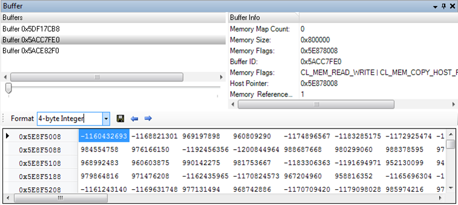

Buffer View
Displays buffer information, content and how the content changed over time. Note that in order to get buffer data, it needs to be enabled in the settings.
Screenshot

Components
- List of buffers captured
- Scroll to view data at different points in time
- Change display representation
- Data grid of buffer data t the current point in time
- Export data to CSV file
- Selected buffer format and general information
- Pagination controls for data display